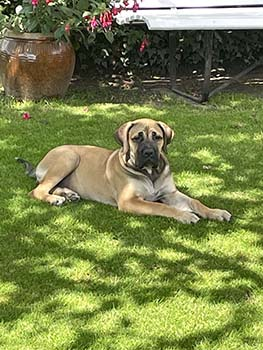

Mijn grootste interesse (en grootste deel van mijn vrije tijd) gaat naar mijn gezin. Ik ben getrouwd met Cindy Vancraenendonck en samen hebben wij een zoontje Vince. Cindy is momenteel filiaalhoudster bij Banden De Condé in Lommel. Dit is een bandencentrale die valt onder de groep: Q team. In haar filiaal werken 5 personeelsleden. 1 persoon op de bureau die Cindy helpt met de administratieve taken en 4 monteurs. Vince is momenteel 5 jaar en gaat naar het derde kleuterklasje. Hij is een zeer actief kind dat niet graag stil zit. Zijn hobby’ (voor zover je op deze leeftijd van hobby’s kan spreken) zijn tekenen, spelen met autootjes, en fietsen. Al vroeg was duidelijk dat hij niet van de fiets weg te slaan was en ik heb eer dan ook voor gezorgd dat er cross parcours in de tuin ligt waar hij zich volledig kan uitleven. Zeer recent hebben we hem meegenomen naar de dichtstbijzijnde BMX club en daar is hij helemaal open gebloeid


Wij hebben ondertussen ook een hond gekocht: Raika. Raika is een Boerboel teef. Wij hopen dat ze een goede speelkameraad voor Vince word. Hoewel ze nu no een puppy is lijkt dit wel goed te komen. Een boerboel is een Zuid-Afrikaanse hond van oorsprong. Niemand kan zeggen hoe men aan dit ras is gekomen, d.w.z. niemand weet welke hondrassen er oorspronkelijk vermengd zijn geweest om aan dit ras te komen. Hierom staat de Boerboel in heel wat landen op de lijst van gevaarlijke honden. Eigenlijk een beetje onterecht want het zijn zeer lieve, geduldige en kalme honden. Er zijn 2 dingen die een gevaar kunnen vormen:
Ikzelf werk graag in mijn moestuin als ik thuis ben. Ik heb een klein moestuintje vanachter in onze tuin en daar ben ik zeer graag bezig. Het is ook zo dat de groentjes die daaruit kome altijd beter smaken dan die vanuit de winkel. Ik doe dit echter niet om een zo groot mogelijke opbrengst te hebben, maar meer om eens rust te vinden na een drukke of stressvolle dag. Mijn grootste interesse ligt bij tomaten. Ik eet zelf doodgraag tomaten en diegenen die je zelf kweekt smaken echt veel beter dan deze die je kan kopen. Dit jaar is mijn oogst spijtig genoeg helemaal mislukt door het slechte weer. Volgend jaar beter zou ik zeggen.
Ik ben een groot raceliefhebber en volg dan ook graag de formule 1 alsook het endurance (WEC) kampioenschap en het rally kampioenschap. Het racen zelf doe ik op de computer/ online. Hier heb ik dan ook een computer zelf samengesteld en een rig (zoals dat wordt genoemd) zelf gemaakt. Dit ‘rig’ bestaat uit:
| Hardware | Specificaties |
|---|---|
| Computer | CPU Intel i9, GPU nVidia 2080, hdd: ssd 1Tb, 32 Gb RAM |
| Schermen | 3x 27 inch schermen BenQ |
| Autostoel | Alfa Romeo |
| Stuur base | Fanatec CSW V2.5 |
| Stuurwiel | Formula CSW en BMW M2 GT3 |
| Frame | Zelf ontworpen en gemaakt rig van aliminium profielen |
Dit is nodig om comfortabel een race te kunnen rijden. Deze races duren van enkele (15) minuten tot enkele uren. De spellen die ik het meest speel zijn: iRacing, Automobilsta, Assetto Corsa en Assetto Corsa Competitzione. Dit zijn de meest realistische spellen die op dit moment op de markt zijn.
Ik hou ervan om films te kijken. Ik heb hierbij een voorkeur voor enkele genres nl:
Natuurlijk wil dit niet zeggen dat ik enkel films bekijk uit deze genres. Ik kan ook genieten van een goede komedie, fantasy of famile film. Dit hangt sterk af van het gezelschap waarin ik deze films bekijk. Ik heb dan ook een redelijk uitgebreide filmcollectie op DVD en BLU-RAY. Ik ben op dit gebied nog niet mee geëvolueerd daar de netflix/ disney+,… kanalen. Je zou kunnen zeggen dat ik op dit gebied nog van de oude stempel ben.